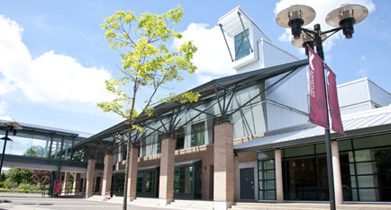

Langley Campus ↔ Civic Plaza Campus
This route connects KPU’s Langley Campus with the Civic Plaza Campus in Surrey.
RideShare KPU provides a reliable way for students to commute between these two locations while saving money and reducing their carbon footprint.

Langley Campus

Civic Plaza Campus
Students frequently travel this route for lectures, group work, and events.
Carpooling with RideShare KPU helps build connections with fellow students while easing the commute.
Why Choose This Route?
- Cost Savings: Split fuel and parking costs with other riders.
- Time Efficiency: Use carpool lanes and simplify parking.
- Community: Meet and network with fellow KPU students.
- Eco‑Friendly: Reduce emissions and help the environment.
Typical Commute Info
The drive between Langley Campus and Civic Plaza typically takes about 35–45 minutes depending on traffic conditions.
Carpooling also makes the parking experience easier.
How to Get Started
- Create your free RideShare KPU account using your student email.
- Look for available rides or post your own schedule for Langley ↔ Civic.
- Connect securely with verified KPU students traveling the same route.
- Arrange pickup points and times through the platform.
- Enjoy the shared commute and save money!
Ready to Ride Langley ↔ Civic Plaza?
Join the RideShare KPU community today and start sharing rides!
Join Now